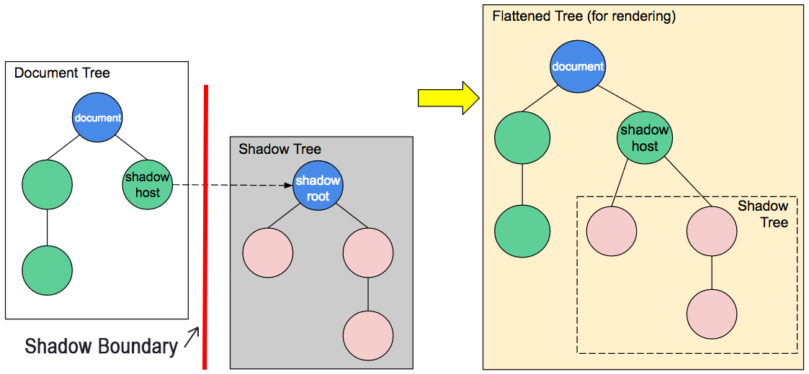

Updated ( 2018-02-02 / 2019-11-13 / 2021-10-10 / 2025-03-14 )
| Method / Property | Description |
|---|---|
| document.doctype | - returns a documentType object representing the doucment type |
| document.lastModified | - returns the date time when the document was last modified (local time) |
| document.referrer | - returns the url of the page that linked this document (Referrer header) |
| | | |
| document.readyState |
- returns the loading status loading - still loading interactive - document loaded but sub-resources (scripts, images, stylesheets, etc...) still loading complete - document and sub-resources are finished loading |
| readyStateChange | - event available on document triggers when the the document.readyStage changes |
| | | |
| document.URL | - (read-only) returns the document's URL |
| document.documentURI | - (read-only) returns the document's URL |
| | | |
| document.writeln(html:str) | - parses the passed string into HTML code and inserts it on the current line 45 69 51 12 11 |
| | | |
| CSS | |
| htmlElement.style |
- gets or sets inline styles of the element through a CSSStyleDeclaration object - to get the currently rendered style use the getComputedStyle() method |
| | | |
| Shadow DOM | |
| |
- makes the |
- the Document Object Model is essentially a JavaScript programming interface for web documents (HTML or XML), it represents the (page) document strucure
<script>
document.URL; // -> file:///Users/diarpall/projects/My-Knowledge-Base/My%20Site/Web%20Browser%20APIs/DOM/Basics/index.html
document.documentURI; // -> file:///Users/diarpall/projects/My-Knowledge-Base/My%20Site/Web%20Browser%20APIs/DOM/Basics/index.html
document.doctype.name; // -> 'html'
docuemnt.lastModified; // -> '03/14/2025 01:45:48'
docuemnt.readyState; // -> 'complete'
docuemnt.referrer; // -> '' // page wasn't linked by any other page
</script>
<script>
document.writeln('<p style="color:green">Hello World!</p>')
</script>
// CSS --------------------------------------------------------------------------------
#testElement {
color: red;
font-size: 25px;
}
// HTML -------------------------------------------------------------------------------
<p id="testElement" style="background-color:white;" onmouseup="getStyles(event)"> Style Test element </p>
<script>
const thisElement = document.getElementById('testElement');
thisElement.style.color; // -> '' // because this only shows inline styles
thisElement.style.fontSize; // -> ''
window.getComputedStyle(thisElement).color; // -> 'rgb(255, 0, 0)' // gets the currently rendered style (read only)
window.getComputedStyle(thisElement).fontSize; // -> '24px'
thisElement.style.border = '2px black solid'; // we can set inline styles like this
thisElement.style.fontWeight = 'bold';
thisElement.style.animationPlayState = 'running';
</script>
- click on the element to display the results in console
Style Test element
// CSS --------------------------------------------------------------------------------
#testElement {
color: red;
font-size: 25px;
animation: someAnimation 3s infinite;
animation-direction: alternate;
animation-play-state: paused;
}
@keyframes someAnimation {
from { background-color: white; }
to { background-color: black; }
}
// HTML -------------------------------------------------------------------------------
<p id="testElement" style="background-color:white;" onmouseup="getStyles(event)"> Style Test element </p>
<script>
function getStyles(event){
const thisElement = event.currentTarget;
console.log( thisElement.style.color ); // -> '' // because this only shows inline styles
console.log( thisElement.style.fontSize ); // -> ''
console.log( window.getComputedStyle(thisElement).color ); // -> 'rgb(255, 0, 0)' // gets the current style (read only)
console.log( window.getComputedStyle(thisElement).fontSize ); // -> '24px'
thisElement.style.border = '2px black solid'; // we can set inline styles like this
thisElement.style.fontWeight = 'bold';
thisElement.style.animationPlayState = 'running';
window.setInterval(function(){
console.log( thisElement.style.backgroundColor ); // -> 'white'
console.log( window.getComputedStyle(thisElement).backgroundColor ); // -> 'rgb(255, 0, 0)' | 'rgb(70, 70, 70)' | 'rgb(3, 3, 3)' // gets the currently computed style
}, 1300)
}
</script>
- the Shadow DOM is an fully encapsulated DOM component, so its HTML, CSS and JavaScript never leaks out to the main document

<div id="shadow-host"></div>
<script>
const style = document.createElement('style');
style.textContent = `
button {
background-color: green;
color: white;
border: none;
padding: 10px 20px;
cursor: pointer;
}
p {
color: lightgreen;
padding: 10px;
}
`;
const shadowHost = document.getElementById('shadow-host');
const shadowRoot = shadowHost.attachShadow({ mode: 'open' });
const button = document.createElement('button');
button.textContent = 'show/hide paragraph';
const paragraph = document.createElement('p');
paragraph.textContent = 'Hello World!';
shadowRoot.appendChild(style);
shadowRoot.appendChild(button);
shadowRoot.appendChild(paragraph);
button.addEventListener('click', () => {
paragraph.style.display = paragraph.style.display === 'none' ? 'block' : 'none';
});
</script>